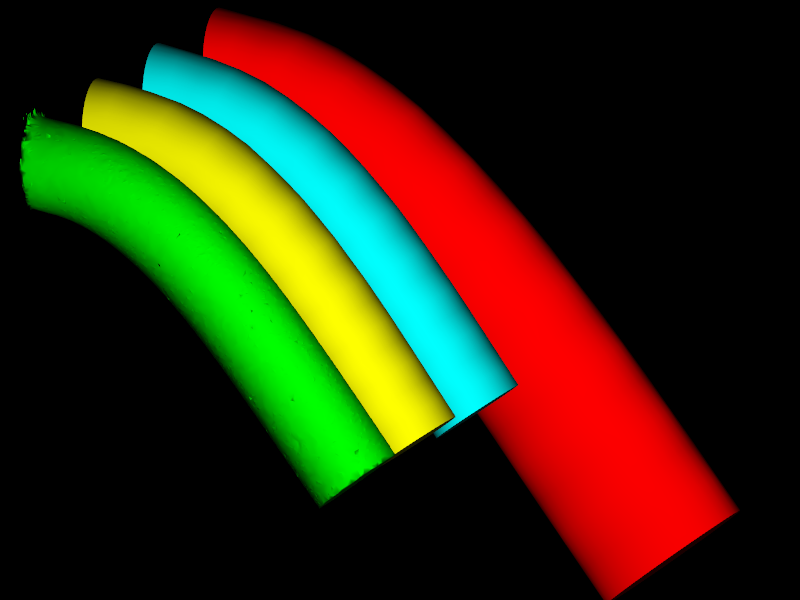

Static Solver

Description
The StaticSolver contains the algorithm used to update particle positions at each time step. As we are dealing with a Static solver, time is not taken into account: it can be useful to measure the convergence of several algorithms.
It uses an auxiliary component, the CGLinearSolver, to solve equation systems.